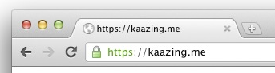

Secure the Gateway Using Trusted Certificates
You can configure secure networking between Kaazing Gateway and its clients and back-end servers using trusted certificates issued by a Certificate Authority. A trusted certificate can be issued from a trusted public Certificate Authority or a Certificate Authority within your company and trusted by both your enterprise clients and servers. Using a trusted certificate also ensures that WebSocket connections are not dropped by intermediaries in the network such as proxy servers and firewalls.
In this procedure, you will do the following:
- Configure the Gateway with a trusted certificate for the Gateway’s host name, and then configure the Gateway with a HTTPS directory service that uses that host name. This will configure the Gateway for TLS/SSL connections from clients.
- Configure the Gateway with a trusted certificate for the back-end server’s host name, and configure the Gateway with a proxy service that accepts the WebSocket Secure (
wss://) connection on the Gateway’s host name and connects over TLS/SSL to the back-end server. This will configure the Gateway for TLS/SSL connections to back-end servers.
Note: You could choose to configure the proxy service only, as it configures both TLS/SSL client and server connections to the Gateway, but the directory service configuration is included because it is a useful method for learning client to Gateway TLS/SSL connections.
Before You Begin
This procedure is part of Secure Network Traffic with the Gateway:
- Secure the Gateway Using Trusted Certificates
- Secure the Gateway Using Self-Signed Certificates
- Secure Clients and Web Browsers with a Self-Signed Certificate
- Require Clients to Provide Certificates to the Gateway
To Secure Gateway Connections Using Trusted Certificates
Secure Client-to-Gateway Connections
-
Identify the host name of the server running the Gateway. Clients must be able to resolve the host name to the IP address of the server running the Gateway in order to establish a secure session with the Gateway.
The Gateway supports certificates that are generated for wildcard names. For example, *.example.com represents example.com and all of its subdomains, such as my.example.com and secure-mail.example.com.
-
Create the custom keystore password file for the Gateway to use with the custom keystore. If you are going to use the default keystore and password file, skip this step. The Gateway is configured to use the default keystore and password already.
To create the password file, create a new text file using a text editor, enter the password, and save the password file in the directory
GATEWAY_HOME/conf/.To configure the Gateway to use the custom keystore and password file, open the
GATEWAY_HOME/conf/gateway-config.xmlfile in a text editor and update thekeystoreelement (contained in thesecurityelement) to use the new keystore and the password file you created, as shown in the following example:<keystore> <type>JCEKS</type> <file>mykeystore.db</file> <password-file>mykeystore.pw</password-file> </keystore> - Locate the Java
keytoolutility that is part of your Java installation. It can be found in the Java bin directory. For example,C:\Program Files\Java\jdk1.7.0_21\bin(Windows) or/Library/Java/home/bin(Mac OS X). -
Create a Certificate Signing Request (CSR).
A trusted certificate is obtained by creating a CSR and sending that request to a public Certificate Authority, such as Symantec, Thawte, and Entrust, or to a Certificate Authority that is already configured in your corporate network, such as a Windows Domain Controller running as a Certificate Authority. A CSR is a public key generated on the server running the Gateway that validates information about the server and your organization when you request a certificate. To create a CSR, do the following:
-
Create a private key for the host name the Gateway will use in its
acceptelement (the host name clients will use when connecting to the Gateway). Substitute your GATEWAY_HOME and password in the example:keytool -genkeypair -alias example.com -keysize 2048 -keyalg RSA-keystore "GATEWAY_HOME\conf\keystore.db" -storetype JCEKS-storepass passwordYou will be prompted to provide information about your organization. This information is used to verify the CSR in the future.
The password value for
-storepassis located in the keystore password file that is located in theGATEWAY_HOME/conffolder (by default, keystore.pw). You can open the file with a text editor to read the default password and enter it in the command. -
Generate the CSR using the same alias:
keytool -certreq -alias example.com -file certreq.txt-keystore "GATEWAY_HOME\conf\keystore.db" -storetype JCEKS-keyalg RSA -storepass passwordA text file containing the CSR is stored in the same folder as keystore.db.
-
Send the CSR text file to the trusted Certificate Authority. The Certificate Authority will return a trusted certificate that you can import into the keystore. In the case of public Certificate Authorities, you will likely need to perform some kind of offline identity verification.
-
-
Import the trusted certificate for the host name of the Gateway into the keystore used by the Gateway.
The following example shows how to import the certificate into the default keystore, called keystore.db, located in
GATEWAY_HOME/conf.keytool -importcert -keystore GATEWAY_HOME\conf\keystore.db -storetype JCEKS -storepass password -alias example.com -file example.cerThe Gateway is now configured with a certificate for its host name, and you can use the host name to accept secure connections from clients over HTTPS or WSS.
-
Configure the Gateway to accept secure communication requests at the same host name used in the certificate by adding a new directory
serviceelement.For example, create a new directory
serviceelement and specify URLs that use TLS/SSL (HTTPS or WSS) in theacceptelement for the directory service, as shown in the following example:<service> <accept>https://www.example.com:9000/</accept> <type>directory</type> <properties> <directory>/base</directory> <welcome-file>index.md</welcome-file> </properties> </service> - Save
gateway-config.xml. -
Verify that the certificate is valid by starting the Gateway. If the Gateway does not start, it might not be accepting the same host name used in the certificate. Check the directory service in
gateway-config.xmland confirm that the domain name in theserviceelement’sacceptdomain matches the domain name used in the certificate. If they do not match, update theacceptdomain ingateway-config.xml, save the file, and then start the Gateway.To troubleshoot TLS/SSL errors and exceptions, see Troubleshooting Kaazing Gateway Security.
If you configured an HTTPS service on the Gateway, enter the URL in a web browser, for example
https://www.example.com:9000. The web browser will indicate that the certificate is trusted and proceed to the secure web page.
Figure: A web browser indicates that the certificate is trusted
At this point, you have a trusted certificate on the Gateway and have configured secure networking between the Gateway and clients for a directory service.
Secure Gateway-to-Server Connections
**Note:** For secure connections from the Gateway to a JMS broker, see the note below.
Now you can configure the Gateway to connect securely with the back-end server by importing a Certificate Authority-issued certificate for the host name of the back-end server into the truststore on the Gateway. The truststore contains the CA-issued certificates for use between the Gateway and back-end servers.
-
Import the CA-issued certificate for the host name of the back-end server into the truststore in the Gateway (if you do not have a certificate for the host name of the back-end server, see step 4 for information on how to obtain it).
The following example shows how to import the certificate to the truststore, called truststore.db, located in
GATEWAY_HOME/conf/:keytool -importcert -keystore GATEWAY_HOME\conf\truststore.db -storepass changeit -trustcacerts -alias example.com -file certificate.cerThe Gateway is configured with a certificate for the host name of the back-end server, and you can use the host name to connect to the back-end server over TLS/SSL. As an example, configure the Gateway to act as a back-end server proxy for the secure networking requests from the client.
-
Open
gateway-config.xmlagain and add a new proxyserviceelement.Add a
serviceelement using theproxytype togateway-config.xml, for example:<service> <accept>wss://www.example.com:9001/</accept> <connect>ssl://offline.example.com:61617</connect> <type>proxy</type> </service>The Gateway uses the new
serviceelement to act as a proxy for the back-end server. Theserviceelement contains anacceptURL for the WSS connection from the client and aconnectURL for the connection to the back-end server using the security protocol supported by the back-end server. - Restart the Gateway and verify that the certificate is valid by using the WSS URL configured in the Gateway. If you cannot connect to the back-end server through the Gateway over TLS/SSL, verify the certificate has not expired and that it exists in the truststore.
Next Steps
To troubleshoot TLS/SSL errors and exceptions, see Troubleshooting Kaazing Gateway Security.
Notes
-
Depending on the JMS broker the Gateway is connecting to, you might need to configure a
jmsservice on the Gateway and configure specific TLS/SSL elements in itsproperties. For example, the followingjmsservicepropertiesare for a secure connection to a TIBCO Enterprise Message Service (EMS) server:<properties> <connection.factory.name>mySecureFactory</connection.factory.name> <context.lookup.topic.format>%s</context.lookup.topic.format> <context.lookup.queue.format>%s</context.lookup.queue.format> <env.java.naming.factory.initial>com.tibco.tibjms.naming.TibjmsInitialContextFactory</env.java.naming.factory.initial> <env.java.naming.provider.url>ssl://ems8.example.com:7223</env.java.naming.provider.url> <env.com.tibco.tibjms.naming.security_protocol>ssl</env.com.tibco.tibjms.naming.security_protocol> <env.com.tibco.tibjms.naming.ssl_trusted_certs>C:\certs\cert.pem</env.com.tibco.tibjms.naming.ssl_trusted_certs> <env.com.tibco.tibjms.naming.ssl_trace>true</env.com.tibco.tibjms.naming.ssl_trace> <env.com.tibco.tibjms.naming.ssl_enable_verify_hostname>true</env.com.tibco.tibjms.naming.ssl_enable_verify_hostname> <env.com.tibco.tibjms.naming.ssl_enable_verify_host>true</env.com.tibco.tibjms.naming.ssl_enable_verify_host> <env.com.tibco.tibjms.naming.ssl_expected_hostname>*.example.com</env.com.tibco.tibjms.naming.ssl_expected_hostname> ...This example specifies the location of the trusted certificate file, enables the verification of the host and hostname, and uses a wildcard hostname for the certificate. The
ssl_expected_hostnamesetting is needed in order for the JNDI lookup and SSL connection to succeed because the wildcard hostname is not an exact match for the EMS server.In addition, the factories.conf file on the EMS server must have the
ssl_verify_hostname,ssl_verify_host, andssl_expected_hostnameconfigured to match the values configured on the Gateway:[mySecureFactory] type = generic url = ssl://ems8.example.com:7223 ssl_trusted = /home/ubuntu/keys/cert.pem ssl_verify_hostname = true ssl_verify_host = true ssl_expected_hostname = *.example.com
- The
serviceelement configures a directory service on the Gateway for the secure URL you specified (for example,https://www.example.com:9000/). - Adding an
acceptfor HTTPS is useful for testing secure connections because it allows you to navigate to a secure web page on the Gateway from a web browser client and ensure that the trusted certificate is accepted by web browsers. - When a web browser loads a web page via HTTP that contains a WSS call the browser does not prompt the user to accept the trusted certificate or notify the user that a trusted certificate is being used. The web browser validates the certificate in the background and if the certificate is valid the connection proceeds without notifying the user. The web browser does provide an indicator that a trusted certificate is used, such as a green lock icon.
- In some deployments, you might want to import a certificate that is used by a different software program such as a web server into the keystore used by the Gateway, or you might receive the certificate for the host name from a colleague in your organization and wish to import that certificate into the Gateway keystore. In order to import these certificates into the keystore you need to export the certificate along with the private key from the database used by the other software, convert them into a PKCS12 file, and then import that file into the keystore used by the Gateway. You can accomplish the import procedure using the
-importkeystorekeytool command. For maximum security, you should avoid this practice and simply follow the steps in this document to create a new CSR using the keystore used by the Gateway, obtain a certificate with that CSR, and import the new certificate into the Gateway keystore. Using the same certificate for different services is not a security best practice, regardless of the fact that both services are on the same server. - To support DSA certificates, you must add
ADHto thessl.cipherselement as follows:<ssl.ciphers>HIGH,MEDIUM,ADH</ssl.ciphers>. Do not useADHwithDEFAULT. DSA certificates are not recommended. See Diffie-Hellman key exchange for more information. If you omit the-keyalgswitch when you create a certificate using keytool, keytool generates a DSA certificate. You should always include-keyalg RSAwhen creating a certificate using keytool. - If you choose to use a password when generating key pairs (optional), ensure that all of the keys in your keystore are secured with the same password as the keystore. If no password is provided when generating a key pair (via
-genkeypair), you are prompted for a password. If you press RETURN at the prompt, the key password is set to the same password as that used for the keystore. Keytool allows you to secure keys with individual passwords (via the-keypassoption) and add them into a keystore that uses a different password (via the -storepass option). When the Gateway attempts to access a key in a keystore configured in this manner, the Gateway fails to start and generates a Null Pointer Exception. The command-keypasswdchanges the password under which the private key is protected. The command-storepasswdchanges the password used to protect the integrity of the keystore contents.